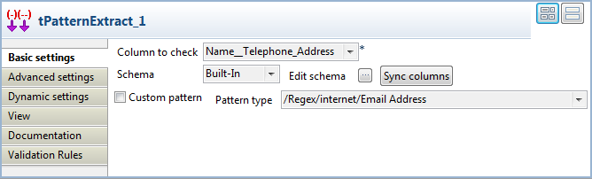
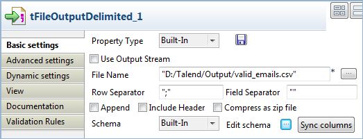

Avertissement
Ce composant est disponible dans la Palette du studio si vous avez souscrit à l'un des produits Talend Platform.
|
Famille de composant |
Data Quality | |
|
Fonction |
Le tPatternExtract extrait d’une colonne toutes les chaînes de caractères qui correspondent à une expression régulière Java. | |
|
Objectif |
Le tPatternExtract vous permet d’écrire toutes les données qui correspondent à un modèle donné. Vous pouvez implémenter tout type d’opération nécessaire sur les données extraites. | |
|
Basic settings |
Column to check |
Sélectionnez la colonne que vous souhaitez analyser. |
|
|
Schema et Edit schema |
Un schéma est une description de lignes, il définit le nombre de champs qui sont traités et passés au composant suivant. Le schéma est soit local (built-in) soit distant dans le Repository. |
|
|
Pattern type |
Sélectionnez dans la liste le modèle avec lequel vous voulez comparer les données. |
|
|
|
Built-in : Le schéma est créé et conservé ponctuellement pour ce composant seulement. Voir également le Guide utilisateur de Talend Data Integration Studio. |
|
|
|
Repository : Le schéma existe déjà et est stocké dans le Repository. Ainsi, il peut être réutilisé. Voir également le Guide utilisateur de Talend Data Integration Studio. |
|
Advanced settings |
tStatCatcher Statistics |
Cochez cette case pour collecter les métadonnées de process du Job, aussi bien au niveau du Job qu’au niveau de chaque composant. |
|
Utilisation |
Ce composant peut être utilisé comme composant de début ou intermédiaire. Il requiert un flux de sortie. | |
Ce scénario décrit un Job à quatre composants, dans lequel le composant tExtractPattern est utilisé afin d’extraire uniquement les adresses e-mail des clients (qui correspondent au modèle Email address) d’un fichier délimité contenant différentes données sur les clients. Il écrit ensuite les données extraites dans un autre fichier délimité. Un composant tFilterColumns est utilisé pour adapter le schéma de sortie.
Glissez les composants suivants de la Palette dans l’espace de modélisation graphique : un tFileInputDelimited, un tPatternExtract, un tFilterColumns et un tFileOutputDelimited.
Connectez le composant tFileInputDelimited au composant tPatternExtract à l'aide d'un lien Row > Main.
Reliez le composant tPatternExtract au tFilterColumns à l'aide d'un lien Row > Matching Data.
Reliez le composant tFilterColumns au tFileOutputDelimited à l'aide d'un lien Row > Main.
Double-cliquez sur le tFileInputDelimited afin d’afficher sa vue Basic settings et définir ses propriétés. Saisissez le nom du fichier d'entrée, le nombre de lignes d'en-tête à ignorer et définissez le schéma.

Dans ce scénario, le fichier délimité contient les noms, les adresses e-mail et les numéros de téléphone dans une seule colonne : Name_Telephone_Address. La capture d'écran suivante montre un extrait du fichier d'entrée.

Définissez comme suit le schéma d'entrée :

Double-cliquez sur le tPatternExtract afin d’afficher sa vue Basic settings et définir ses propriétés.
Dans la liste Column to check, sélectionnez la colonne dont vous voulez vérifier les données, par rapport au modèle défini, Name_Telephone_Address dans cet exemple.
Dans la liste Pattern type, sélectionnez le modèle en accord avec lequel vous souhaitez extraire les données, /Regex/internet/Email Address dans cet exemple.
Dans la vue Basic settings du composant tFilterColumns, cliquez sur le bouton [...] à côté du champ Edit schema pour ouvrir la boîte de dialogue [Schema].

Sélectionnez la colonne qui vous intéresse dans le schéma d'entrée puis cliquez sur la flèche pointant vers la droite afin de copier la colonne dans le schéma de sortie. Cliquez sur OK pour fermer la boîte de dialogue.
Double-cliquez sur le tFileOutputDelimited afin d’afficher sa vue Basic settings et définir ses propriétés.
Dans le champ File Name, spécifiez le chemin d'accès au fichier dans lequel vous souhaitez écrire vos données de sortie.
Définissez les séparateurs de lignes et de champs, au besoin. Dans cet exemple, l’objectif est de séparer les adresses e-mail des clients par un point virgule.
Sauvegardez votre Job et appuyez sur F6 pour l’exécuter.
Les adresses e-mail des clients sont extraites de la colonne sélectionnée, selon le modèle Email défini, et écrites dans le fichier de sortie, séparées par un point virgule. Vous pouvez, par exemple, envoyer un mail à tous vos clients en une seule fois.